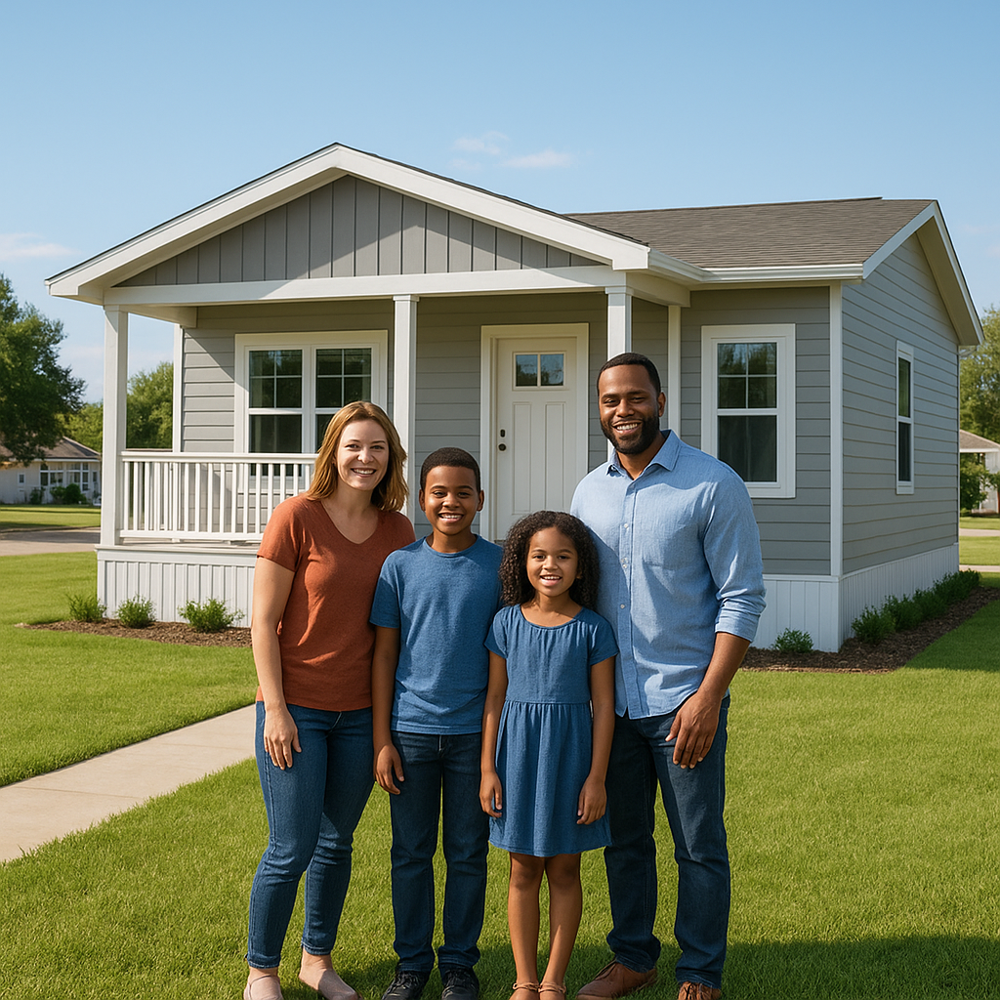

Manufactured homes represent some of the most affordable entry points to homeownership in Texas — prices in the $180,000–$320,000 range in USDA-eligible areas like Forney, Royse City, and Terrell, versus $290,000+ for comparable site-built homes in the same zip codes. But financing a manufactured home in Texas is more complicated than financing a site-built home, and the right loan program depends on whether the home is on owned land, whether it has been converted to real property, and whether it qualifies for programs like MH Advantage or USDA.
I'm Bond Peter Njoku (NMLS #2670329), a mortgage loan officer based in Garland. I help DFW-area buyers finance manufactured homes using FHA, VA, USDA, and conventional programs. This guide explains every loan option, the Texas-specific real property conversion process, and where manufactured homes make the most financial sense in the DFW region.
What is a manufactured home — and how is it different from a mobile home in Texas?
In Texas (and under federal law), any factory-built home constructed after June 15, 1976, and built to HUD standards is a "manufactured home." Older factory-built homes (pre-1976) are called "mobile homes" and are generally not eligible for FHA, VA, USDA, or conventional mortgage financing — only chattel loans or cash.
Every qualifying manufactured home has a HUD Data Plate inside (near the electrical panel) showing the wind zone, thermal zone, and roof load it was built to handle. Texas is primarily in Wind Zone II and III, so the home's wind rating matters for insurance and financing. The home must also be at least 400 square feet and be designed as a permanent dwelling.
What are the loan options for manufactured homes in Texas in 2026?
| Loan Type | Min Credit | Down Payment | Rate Range | Real Property Required? | Land Required? |
|---|---|---|---|---|---|
| Chattel (personal property) | 550+ | 5–10% | 7.5–12% | No | No (leased lot OK) |
| FHA Title II | 580+ | 3.5% | 6.5–8% | Yes | Yes (own or buy) |
| VA | 620+ (guideline) | 0% | 6.5–7.5% | Yes | Yes |
| USDA Guaranteed | 640+ | 0% | 6.5–7.5% | Yes | Yes |
| Conventional Standard | 680+ | 5–20% | 7–8% | Yes | Yes |
| MH Advantage (Fannie Mae) | 620+ | 3% | Site-built rate | Yes | Yes |
What is the difference between real property and chattel for a manufactured home in Texas?
A manufactured home that sits on a leased lot in a park, or that has a vehicle title through TxDMV, is legally classified as personal property — "chattel." Chattel loans treat the home like a car: higher rates, shorter terms, no FHA/VA/USDA eligibility.
When the home is permanently affixed to land that the owner owns, and the vehicle title is surrendered, the home becomes real property — legally treated like a site-built home. Real property status unlocks FHA, VA, USDA, and conventional mortgage financing, which typically run 2–4 percentage points lower in rate than chattel loans.
The difference in payment is significant: a $200,000 chattel loan at 9% for 20 years = $1,800/month. The same $200,000 as a real property FHA loan at 7.0% for 30 years = $1,331/month. Converting to real property saves $469/month in this example.
How do I convert a manufactured home to real property in Texas?
Texas has a specific process for converting manufactured homes from personal property to real property, managed by the Texas Department of Housing and Community Affairs (TDHCA):
- Verify ownership: Obtain a Statement of Ownership and Location (SOL) from TDHCA confirming you are the titled owner of the manufactured home. Search at tdhca.texas.gov/mh.
- Install on permanent foundation: The home must be on a permanent, engineered foundation — typically concrete piers, a slab, or a basement — with utility hookups (water, sewer, electric) permanently installed.
- Complete HUD-1 Declaration: Complete and record an Affidavit of Affixation (sometimes called HUD-1 or Affidavit of Real Property) with your county clerk, confirming the home is permanently attached to the real property parcel.
- Surrender the vehicle title: File with TDHCA to cancel (surrender) the Certificate of Title issued by TxDMV. Once the title is canceled, the home is real property.
- Update county records: The county appraisal district will need to be notified so the home and land are taxed together as real property rather than the home being taxed separately as personal property.
This process typically takes 4–8 weeks. I work with a title company in DFW that handles manufactured home closings regularly — they manage the SOL process as part of the closing. Call me at 469-545-7180 to connect with that team.
What are the FHA requirements for a manufactured home in Texas?
For FHA Title II financing, the home must meet all of the following:
- Built after June 15, 1976, and have a red HUD certification label on each section
- Permanently affixed to a foundation that meets HUD's Permanent Foundation Guide for Manufactured Housing (HUD-7584)
- Classified and taxed as real property (not chattel)
- At least 400 square feet of living space
- The buyer must own the land, or purchase it as part of the same transaction
- The home must be a single-family primary residence
- The site must have adequate utilities (water, sewer, electric)
Minimum credit score is 580 for 3.5% down, or 500 for 10% down. The 2026 FHA loan limit in DFW is $563,500 — well above the price of most manufactured homes in the area.
What is MH Advantage and how does it lower my rate?
Fannie Mae's MH Advantage (and Freddie Mac's matching CHOICEHome program) is a conventional mortgage for manufactured homes built to a higher standard than the HUD minimum. To qualify, the home must carry an MH Advantage sticker from the manufacturer, which confirms it has features comparable to site-built homes: pitched roofs (5:12 minimum pitch), covered porches, carports or garages, energy-efficient windows, drywall interior, and other site-built characteristics.
Benefits of MH Advantage over standard conventional manufactured home loans:
- 3% down payment (vs 5–20% for standard conventional MH)
- No 0.50% manufactured housing loan surcharge
- Site-built interest rate pricing (vs 1–2% premium on standard MH conventional)
- PMI cancels at 80% LTV (97% max LTV on purchase)
As of June 4, 2026, Fannie Mae and Freddie Mac aligned their MH Advantage and CHOICEHome requirements, making it easier for lenders to work with both programs. If you're shopping for a new manufactured home in DFW, ask the dealer specifically whether the model qualifies for MH Advantage — dealers typically know this and can provide the documentation.
Can I use USDA or VA to buy a manufactured home near Forney or Royse City?
Yes, and this is one of the most compelling opportunities in the DFW fringe market. Forney (Kaufman County) and Royse City (Rockwall County) are USDA-eligible for the Guaranteed 502 program, and many rural lots in those areas are suitable for manufactured homes.
USDA requirements for manufactured homes: the home must be new (not previously titled or occupied), built to HUD code after 1976, on a permanent foundation, and the purchase must include the land. Income limits apply: $139,300 for a 1–4 person household in the Dallas metro area in 2026.
VA loans are available to eligible veterans and can finance manufactured homes on permanent foundations. The home must meet VA's minimum property requirements for permanent foundation, and the veteran must certify primary occupancy intent.
Client scenario: Royse City, USDA, manufactured home on permanent foundation
Earlier this year I helped a Royse City family — two working adults, combined income $87,000, two kids, 638 FICO — finance a 3-bedroom double-wide manufactured home on a half-acre lot they were purchasing simultaneously. The home was new from a local dealer, MH Advantage sticker qualified, on a permanent concrete foundation. Purchase price (home + land): $229,000.
We used a USDA Guaranteed loan: $0 down, USDA guarantee fee 1.0% ($2,290 rolled in), annual fee 0.35% ($796/yr = $66/mo). Rate at 6.8%. Monthly P&I: $1,524. Rockwall County taxes (1.9% on $229K): $363/mo. Insurance: $160/mo. Total PITI: $2,113/month. They were previously paying $1,650/month in rent for a 2-bedroom apartment in Rowlett. The jump was $463/month — but they went from renting to owning a 3-bedroom on half an acre with zero down.
Frequently Asked Questions
Can I get an FHA loan for a manufactured home in Texas?
I'm Bond Peter Njoku (NMLS #2670329) and yes — FHA Title II loans finance manufactured homes in Texas as long as the home is on a permanent foundation, you own (or are buying) the land, and the home was built after June 15, 1976 with a HUD compliance label. Minimum credit score is 580 for 3.5% down. A Texas-specific step: if the home has a vehicle title through TxDMV, it must be converted to real property through the TDHCA Statement of Ownership process before FHA will approve the loan. Call or text me at 469-545-7180 to walk through a specific home's eligibility.
What is the difference between a chattel loan and a mortgage for a manufactured home?
I'm Bond Peter Njoku (NMLS #2670329) and the difference is real property vs personal property. A chattel loan treats the home like a vehicle — 10-20 year terms, rates of 7.5-12%, and no land attached. A mortgage treats home and land together as real property — 30-year terms, rates of 6.5-8%, and eligibility for FHA/VA/USDA programs. Converting from chattel to real property in Texas requires the TDHCA Statement of Ownership process and surrendering the vehicle title — a step I help clients navigate. Call or text me at 469-545-7180.
Can I use a USDA loan for a manufactured home near Forney or Royse City Texas?
I'm Bond Peter Njoku (NMLS #2670329) and yes — USDA loans can finance new manufactured homes on permanent foundations in USDA-eligible areas like Forney and Royse City, with zero down. The home must be new (not previously titled), built after 1976 to HUD code, on a permanent foundation, and the purchase must include the land. The 2026 USDA income limit for Dallas-area households is $139,300 for a 1-4 person household. Call or text me at 469-545-7180 to check your eligibility and find the right property.
What is MH Advantage and how does it lower my rate?
I'm Bond Peter Njoku (NMLS #2670329) and Fannie Mae's MH Advantage program is a conventional mortgage for manufactured homes with site-built quality features — pitched roofs, covered porches, drywall interiors. Homes with the MH Advantage sticker qualify for 3% down, site-built rate pricing (no 0.50% surcharge), and PMI that cancels at 80% LTV. Freddie Mac's equivalent is CHOICEHome. If you're buying a new manufactured home in DFW, ask the dealer if the model has the MH Advantage sticker — it can save you 1-2 percentage points on your rate. Call or text me at 469-545-7180.
Ready to Finance a Manufactured Home in Texas?
I'm Bond Peter Njoku (NMLS #2670329). I close manufactured home loans across DFW — FHA, USDA, VA, and conventional — and I work with a title company that handles the Texas real property conversion process. Call or text me at 469-545-7180, message me on WhatsApp, or start your pre-approval online.